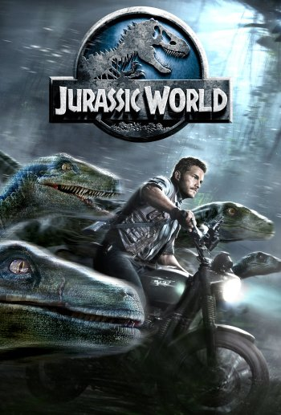

JURASSIC WORLD
|  |
Han pasado 22 años desde que el millonario John Hammond clonara el primer dinosaurio. Con tecnologías mejoradas y nuevas medidas de seguridad, el parque temático "Jurassic World" abre sus puertas. La nueva atracción del parque es el Indominus Rex, una nueva especie de dinosaurio creada por los científicos de forma artificial y más peligrosa que las otras especies conocidas. Sin embargo, algo sale mal y el dinosaurio se escapa y provoca el caos en el parque. |